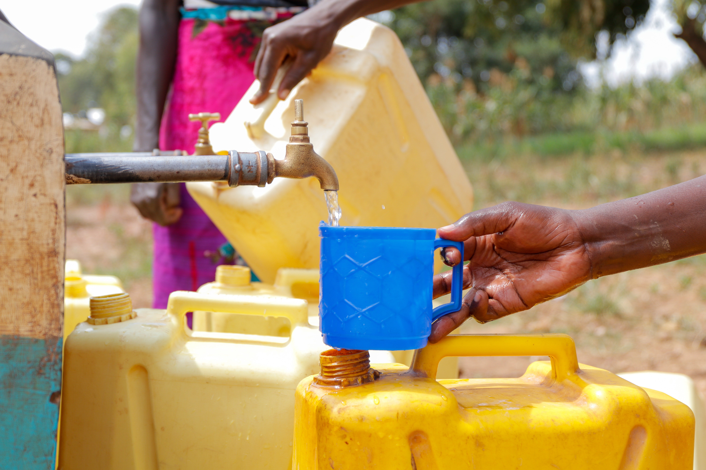

-
Education

Education is essential for youth in creating opportunities for themselves. Personal development. The leaders of tomorrow.
Education for Sustainable Development (ESD) equips learners with the knowledge, skills, values and attitudes necessary to make informed decisions and take responsible actions for environmental integrity, economic viability and sustainability. fair society.
ESD is a lifelong learning process that is integral to quality education. It strengthens the cognitive, social, emotional and behavioral dimensions of learning. Holistic and transformative, it encompasses the content and outcomes of learning, pedagogy and the educational environment.
ESD is recognized as a critical enabler of all Sustainable Development Goals and achieves its goal by transforming society. It empowers everyone, whatever their sex and age, for present and future generations, while respecting cultural diversity
-
Poverty

689 million people live in extreme poverty, surviving on less than $1.90 a day. The Sustainable Development Goals (SDGs) are a universal agenda with the ambition to respond to current challenges by building a more just and sustainable world. Goal 1 is poverty eradication
While the number of people living in extreme poverty has declined rapidly according to the latest estimates, 11% of the world's population live below the poverty line, or on less than $ 1.90 per day per person.
Poverty is not just about insufficient income and resources. It includes hunger and malnutrition, as well as limited access to education, social discrimination and exclusion, but also lack of participation in decision-making, unemployment and disease. For example, only 45% of the world's population benefits from an effective social protection plan.
-
Water and Sanitation
Did you know that 2.2 billion people in the world do not have access to drinking water at home1? Considering that one of the most effective ways to stop the spread of COVID-19 and other pathogens is good hand hygiene with soap and water, this figure is alarming.
The 6th objective is to ensure the availability and sustainable management of water and sanitation for all. More specifically, 8 targets must be reached by 2030
Assurer un accès universel et équitable à une eau potable sûre et abordable pour tous. Assurer l'accès de tous à des services d'assainissement et d'hygiène adéquats et équitables et mettre fin à la défécation à l'air libre, en accordant une attention particulière aux besoins des femmes, des filles et des personnes en situation vulnérable. Améliorer la qualité de l'eau en réduisant la pollution, en éliminant les déversements et en minimisant les rejets de produits chimiques et de matières dangereuses, en réduisant de moitié la proportion d'eaux usées non traitées et en augmentant sensiblement le recyclage et la réutilisation sans danger au niveau mondial. Accroître sensiblement l'efficacité de l'utilisation de l'eau dans tous les secteurs, assurer des prélèvements et un approvisionnement durable en eau douce pour faire face à la pénurie d'eau et réduire sensiblement le nombre de personnes qui en souffrent. Mettre en œuvre une gestion intégrée des ressources en eau à tous les niveaux, notamment par une coopération transfrontalière, le cas échéant. Protéger et restaurer les écosystèmes liés à l'eau, notamment les montagnes, les forêts, les zones humides, les rivières, les aquifères et les lacs.
-
Hunger

Pollution is overall one of the biggest issues of our day and age while we are not in quarantine, due for the high demand of resources and production. But while we are quarantined and a lot of industries stopped, that high demand was basically almost brought to 0 compared to what it was, and with that out pollution also came down.
From what scientist say and studied, the ozone layer is being repaired so quickly that stopped some changes that happened in previous years that were really worrying. For example the melting of Antarctica that was one of the biggest issues, due to the fact of rising the sea level witch could submerge some coastal cities, completely stopped.
Not only from air pollution but also from hearing pollution and being stopped there are a lot of different animals that started to occupy what us humans are not using. There are a lot of report and videos that show animals wandering through the cities, also plants are growing to places they are not supposed to be in, at least for human standards.
And with this we can see how the ecosystem works without our presence, and we can also see how much worse we are making it. This is basically a warning for our society to do something or our planet will be in danger.
-
Climate Change

Climate change has become important for the sustainable development agenda. Its impact and the needs for adaptation and mitigation measures go beyond environmental issues. ... Businesses must and will see the fight against climate change from the perspective of opportunities
Human life, health and safety depend on their natural environment. When climate change devastates this environment, we suffer at every level. And those who pay a high price are those who have contributed the least to this global problem: the most deprived.
Climate change exacerbates the hardships of the most vulnerable and makes every aspect of their lives even more complicated. It exacerbates existing problems, such as food insecurity, water shortages and the threat of disease.
Climate change is already threatening development work across the world and will continue to do so in the years to come. To deliver the needed help to children and their communities, World Vision must take the links between climate change and sustainable development seriously.